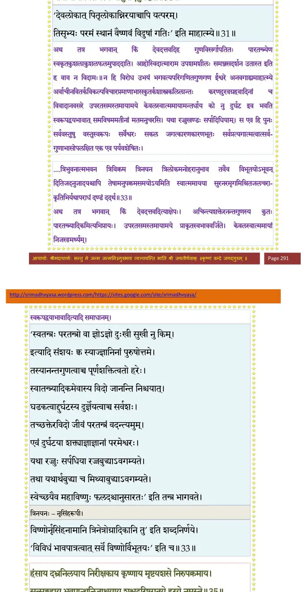
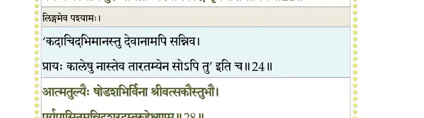
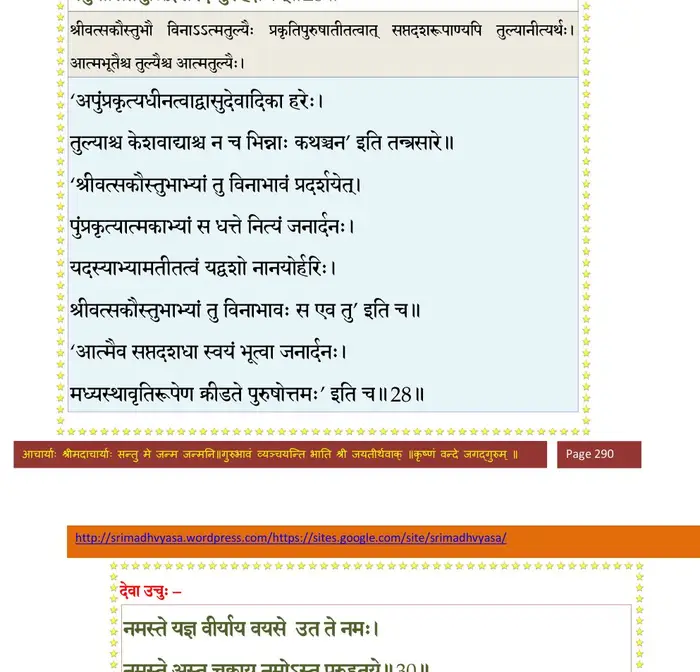
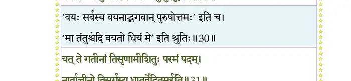
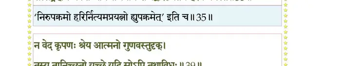
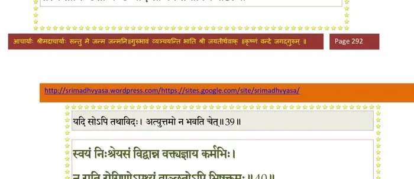
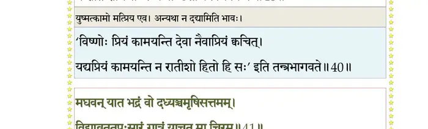
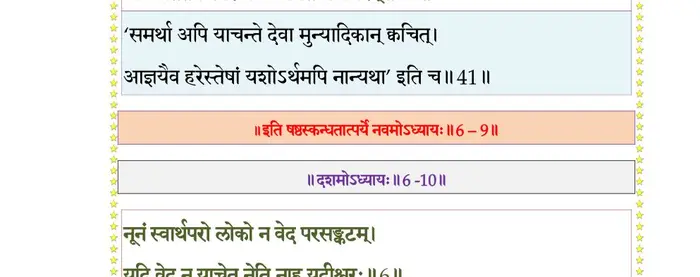

स्कन्ध 6 · अध्याय 9
श्लोक १
श्रीशुक उवाच–
तस्यासन् विश्वरूपस्य शिरांसि त्रीणि भारत ।
सोमपीथं सुरापीथमन्नादमिति शुश्रुमः।। १ ।।
तस्यासन् विश्वरूपस्य शिरांसि त्रीणि भारत ।
सोमपीथं सुरापीथमन्नादमिति शुश्रुमः।। १ ।।
श्लोक २
स वै बर्हिषि देवेभ्यो भागं प्रत्यक्षमुच्चकैः ।
अददाद् यस्य पितरो देवास्तं प्रश्नयन्नृप।। २ ।।
अददाद् यस्य पितरो देवास्तं प्रश्नयन्नृप।। २ ।।
भागवततात्पर्यनिर्णय

श्लोक ३
स एव हि ददौ भागं परोक्षमसुरान् प्रति ।
यजमानोऽवहद् भागं मातृस्नेहवशानुगः।। ३ ।।
यजमानोऽवहद् भागं मातृस्नेहवशानुगः।। ३ ।।
श्लोक ४
तद् देवहेलनं तस्य धर्मालीकं सुरेश्वरः ।
आलक्ष्य तरसा भीतस्तच्छीर्षाण्यच्छिनद् रुषा।। ४ ।।
आलक्ष्य तरसा भीतस्तच्छीर्षाण्यच्छिनद् रुषा।। ४ ।।
श्लोक ५
सोमपीथं तु यत् तस्य शिर आसीत् कपिञ्जलः ।
कलविङ्कः सुरापीथमन्नादं यत् स तित्तिरिः।। ५ ।।
कलविङ्कः सुरापीथमन्नादं यत् स तित्तिरिः।। ५ ।।
श्लोक ६
ब्रह्महत्यामञ्जलिना जग्राह यदपीश्वरः ।
संवत्सरान्ते तदघं भूताशंसाविशुद्धये ।
भूम्यम्बुद्रुमयोषिद्भ्यश्चतुर्धा व्यभजद्धरिः।। ६ ।।
संवत्सरान्ते तदघं भूताशंसाविशुद्धये ।
भूम्यम्बुद्रुमयोषिद्भ्यश्चतुर्धा व्यभजद्धरिः।। ६ ।।
श्लोक ७
भूमिस्तुरीयं जग्राह खातपूरवरेण वै ।
ईरणं ब्रह्महत्याया रूपं भूमौ प्रदृश्यते।। ७ ।।
ईरणं ब्रह्महत्याया रूपं भूमौ प्रदृश्यते।। ७ ।।
श्लोक ८
तुरीयं छेदरोहेण वरेण जगृहुर्द्रुमाः ।
तेषां निर्यासरूपेण ब्रह्महत्या प्रदृश्यते।। ८ ।।
तेषां निर्यासरूपेण ब्रह्महत्या प्रदृश्यते।। ८ ।।
श्लोक ९
शश्वत्कामवरेणांहस्तुरीयं जगृहुः स्त्रियः ।
रजोरूपेण तास्वंहो मासि मासि प्रदृश्यते।। ९ ।।
रजोरूपेण तास्वंहो मासि मासि प्रदृश्यते।। ९ ।।
श्लोक १०
द्रव्यभूयोवरेणापस्तुरीयं जगृहुर्मलम् ।
तासु बुद्बुदफेनाभ्यां दृष्टं तद्धरिकिल्बिषम्।। १० ।।
तासु बुद्बुदफेनाभ्यां दृष्टं तद्धरिकिल्बिषम्।। १० ।।
श्लोक ११
हतपुत्रस्ततस्त्वष्टा जुहावेन्द्राय शत्रवे ।
इन्द्रशत्रो विवर्धस्व मा चिरं जहि विद्विषम्।। ११ ।।
इन्द्रशत्रो विवर्धस्व मा चिरं जहि विद्विषम्।। ११ ।।
श्लोक १२
अथान्वाहार्यपचनादुत्थितो घोरदर्शनः ।
कृतान्त इव लोकानां युगान्तसमये यथा।। १२ ।।
कृतान्त इव लोकानां युगान्तसमये यथा।। १२ ।।
श्लोक १३
विष्वग्विवर्धमानं तमिषुमात्रं दिने दिने ।
दग्धशैलप्रतीकाशं सन्ध्याभ्रानीकवाससम् ।
तप्तताम्रशिखाश्मश्रुं मध्याह्नार्कोग्रलोचनम्।। १३ ।।
दग्धशैलप्रतीकाशं सन्ध्याभ्रानीकवाससम् ।
तप्तताम्रशिखाश्मश्रुं मध्याह्नार्कोग्रलोचनम्।। १३ ।।
श्लोक १४
देदीप्यमानत्रिशिखे शूल आरोप्य रोदसी ।
नृत्यन्तमुन्नदन्तं च चालयन्तं पदा महीम्।। १४ ।।
नृत्यन्तमुन्नदन्तं च चालयन्तं पदा महीम्।। १४ ।।
श्लोक १५
दरीगम्भीरवक्त्रेण पिबन्तं च नभस्तलम् ।
लिहन्तं जिह्वयर्क्षाणि ग्रसन्तं भुवनत्रयम्।। १५ ।।
लिहन्तं जिह्वयर्क्षाणि ग्रसन्तं भुवनत्रयम्।। १५ ।।
श्लोक १६
महता रौद्रदंष्ट्रेण जृम्भयन्तं मुहुर्मुहुः ।
वित्रस्ता दुद्रुवुर्लोका वीक्ष्य सर्वे दिशो दश।। १६ ।।
वित्रस्ता दुद्रुवुर्लोका वीक्ष्य सर्वे दिशो दश।। १६ ।।
श्लोक १७
येनावृता इमे लोकास्तमसा त्वाष्ट्रमूर्तिना ।
स वै वृत्र इति प्रोक्तः पापः परमदारुणः।। १७ ।।
स वै वृत्र इति प्रोक्तः पापः परमदारुणः।। १७ ।।
श्लोक १८
तं निजघ्नुरभिद्रुत्य सगणा विबुधर्षभाः ।
स्वैः स्वैर्दिव्यास्त्रशस्त्रौघैः सोऽग्रसत् तानि कृत्स्नशः।। १८ ।।
स्वैः स्वैर्दिव्यास्त्रशस्त्रौघैः सोऽग्रसत् तानि कृत्स्नशः।। १८ ।।
श्लोक १९
ततस्ते विस्मिताः सर्वे विषण्णा ग्रस्ततेजसः (भ्रष्टचेतसः) ।
प्रत्यञ्चमादिपुरुषमुपतस्थुः समाहिताः ।। १९ ।।
प्रत्यञ्चमादिपुरुषमुपतस्थुः समाहिताः ।। १९ ।।
श्लोक २४
देवा ऊचुः–
वाय्वम्बराग्न्यप्क्षितयस्त्रिलोका ब्रह्मादयो ये वयमुद्विजन्तः ।
हराम यस्मै बलिमन्तकोऽसौ बिभेति यस्मादरणं ततो नः।। २०
अविस्मितं तं परिपूर्णकामं स्वेनैव लाभेन समं प्रशान्तम् ।
विनोपसर्पत्यपरं हि बालिशः श्वलाङ्गुलेनातितित(पिप)र्ति सिन्धुम् ।।
यस्योरुशृङ्गे जगतीं स्वनावं मनुर्यथाऽऽबध्य ततार दुर्गम् ।
स एव नस्त्वाष्ट्रभयाद् दुरन्तात् त्राता श्रितान् वारिचरोऽपि नूनम्।।
पुरा स्वयम्भूरपि संयमाम्भस्युदीर्णवातोर्मिरवैः कराले ।
एकोऽरविन्दात् पतितस्ततार तस्माद् भयाद् येन स नोऽस्तु पारः।।
य एक ईशो निजमायया नः ससर्ज येनानुसृजाम विश्वम् ।
वयं च यस्यापि पुरः समेताः पश्याम लिङ्गं पृथगीशमानिनः ।।२४।।
वाय्वम्बराग्न्यप्क्षितयस्त्रिलोका ब्रह्मादयो ये वयमुद्विजन्तः ।
हराम यस्मै बलिमन्तकोऽसौ बिभेति यस्मादरणं ततो नः।। २०
अविस्मितं तं परिपूर्णकामं स्वेनैव लाभेन समं प्रशान्तम् ।
विनोपसर्पत्यपरं हि बालिशः श्वलाङ्गुलेनातितित(पिप)र्ति सिन्धुम् ।।
यस्योरुशृङ्गे जगतीं स्वनावं मनुर्यथाऽऽबध्य ततार दुर्गम् ।
स एव नस्त्वाष्ट्रभयाद् दुरन्तात् त्राता श्रितान् वारिचरोऽपि नूनम्।।
पुरा स्वयम्भूरपि संयमाम्भस्युदीर्णवातोर्मिरवैः कराले ।
एकोऽरविन्दात् पतितस्ततार तस्माद् भयाद् येन स नोऽस्तु पारः।।
य एक ईशो निजमायया नः ससर्ज येनानुसृजाम विश्वम् ।
वयं च यस्यापि पुरः समेताः पश्याम लिङ्गं पृथगीशमानिनः ।।२४।।
भागवततात्पर्यनिर्णय

श्लोक २७
यो नः सपत्नैर्भृशमर्द्यमानात् देवर्षितिर्यङ्नृषु नित्य एव ।
कृतावतारस्तनुभिः स्वमायया कृत्वाऽऽत्मसात् पाति युगे युगे च ।।२५
तमेव देवा वयमात्मदैवतं परं प्रधानं पुरुषं विश्वमाद्यम् ।
व्रजाम सर्वे शरणं शरण्यं स्वानां स नो धास्यति शं महात्मा।।२६
श्रीशुक उवाच–
इति तेषां महाराज सुराणामुपतिष्ठताम् ।
प्रतीच्यां दिश्यभूदाविः शङ्खचक्रगदाधरः।। २७ ।।
कृतावतारस्तनुभिः स्वमायया कृत्वाऽऽत्मसात् पाति युगे युगे च ।।२५
तमेव देवा वयमात्मदैवतं परं प्रधानं पुरुषं विश्वमाद्यम् ।
व्रजाम सर्वे शरणं शरण्यं स्वानां स नो धास्यति शं महात्मा।।२६
श्रीशुक उवाच–
इति तेषां महाराज सुराणामुपतिष्ठताम् ।
प्रतीच्यां दिश्यभूदाविः शङ्खचक्रगदाधरः।। २७ ।।
श्लोक २८
आत्मतुल्यैः षोडशभिर्विना श्रीवत्सकौस्तुभौ ।
पर्युपासितमुन्निद्रशरदम्बुरुहेक्षणम्।। २८ ।।
पर्युपासितमुन्निद्रशरदम्बुरुहेक्षणम्।। २८ ।।
भागवततात्पर्यनिर्णय

श्लोक २९
दृष्ट्वा तममराः सर्वे ईक्षणाह्लादविक्लवाः ।
दण्डवत् पतिता भूमौ शनैरुत्थाय तुष्टुवुः।। २९ ।।
दण्डवत् पतिता भूमौ शनैरुत्थाय तुष्टुवुः।। २९ ।।
श्लोक ३०
देवा ऊचुः–
नमस्ते यज्ञवीर्याय वयसे उत ते नमः ।
नमस्ते अस्तु चक्राय नमोऽस्तु पुरुहूतये।। ३० ।।
नमस्ते यज्ञवीर्याय वयसे उत ते नमः ।
नमस्ते अस्तु चक्राय नमोऽस्तु पुरुहूतये।। ३० ।।
भागवततात्पर्यनिर्णय

श्लोक ३१
यत् ते गतीनां तिसृणामीशितुः परमं पदम् ।
नार्वाचीनो विसर्गस्य धातुर्वेदितुमर्हति।। ३१ ।।
नार्वाचीनो विसर्गस्य धातुर्वेदितुमर्हति।। ३१ ।।
श्लोक ३२
ओं नमस्ते भगवन् नारायण वासुदेवादिपुरुष महानुभाव परममङ्गल परमकल्याण परमकारुणिक परमहंसपरिव्राजकैः परमेणात्मयोगसमाधिना परिभावितपरिस्फुटितपारमहंस्यधर्मेणोद्घाटिततमःकपाटद्वारेणापावृते आत्मलोके स्वयमुपलब्धो निजसुखानुभवो भवान् दुरवबोध इव तव विहारयोगो यदशरणोऽशरीर इदमनपेक्षितास्मत्समवायः स आत्मनैवा-विक्रियमाणेन सगुणमगुणः सृजसि पासि हंसि।। ३२ ।।
श्लोक ३३
अथ तत्र भगवान् किं देवदत्तवदिह गुणविसर्गापतितः पारतन्त्र्येण स्वकृत-कुशलाकुशलफलमुपाददाति आहोस्विदात्माराम उपशमशीलः समञ्जसदर्शन उदास्त इति ह वाव न विदामः ।
न हि विरोध उभयं भगवत्यपरिगणितगुणगण ईश्वर अनवगाह्यमाहात्म्ये अर्वाचीनविकल्पवितर्कविचारप्रमाणाभासकुतर्कशास्त्रकलिलान्तःकरणदुरव-ग्रहवादिनां च विवादानवसरे उपरतसमस्तमायामये केवलस्वात्म-मायामन्तर्धाय को नु दुर्घट इव भवति स्वरूपद्वयाभावात् । समविषम-मतीनां मतमनुसरसि यथा रज्जुखण्डः सर्पादिधियाम् । स एव नः सर्ववस्तुषु वस्तुस्वरूपः सर्वेश्वरः सकलजगत्कारणकारणभूतः सर्वप्रत्य-गात्मत्वात् सर्वगुणाभासोपलक्षित एक एव पर्यवशेषितः ।।
अथ ह वाव तव महिमामहामृतरससमुद्रविप्लुषाऽसकृल्लीढया स्वमनसि निष्यन्दमानानवरतसुखेन विस्मारितदृष्टश्रुतविषयसुखलेशाभासाः परम-भागवता एकान्तिनो भगवति सर्वभूतप्रियसुहृदि सर्वात्मनि निरन्तर-निर्वृतमनसः कथमु ह वा एते मधुमथन पुनः स्वार्थकुशला ह्यात्म-प्रियसुहृदः साधवस्त्वच्चरणाम्बुजानुसेवां विसृजन्ति न यत्र पुनरयं संसारपरिवर्तः ।
त्रिभुवनात्मभवन त्रिविक्रम त्रिनयन त्रिलोकमनोहरानुभाव तवैव विभूतयोऽभूवन् दितिजदनुजादयश्चापि तेषामनुपक्रमसमयोऽयमिति स्वात्ममायया सुरनरमृगमिश्रितजलचराकृतिभिः यथाऽपराधं दण्डं दधर्थावतीर्य ।। ३३ ।।
न हि विरोध उभयं भगवत्यपरिगणितगुणगण ईश्वर अनवगाह्यमाहात्म्ये अर्वाचीनविकल्पवितर्कविचारप्रमाणाभासकुतर्कशास्त्रकलिलान्तःकरणदुरव-ग्रहवादिनां च विवादानवसरे उपरतसमस्तमायामये केवलस्वात्म-मायामन्तर्धाय को नु दुर्घट इव भवति स्वरूपद्वयाभावात् । समविषम-मतीनां मतमनुसरसि यथा रज्जुखण्डः सर्पादिधियाम् । स एव नः सर्ववस्तुषु वस्तुस्वरूपः सर्वेश्वरः सकलजगत्कारणकारणभूतः सर्वप्रत्य-गात्मत्वात् सर्वगुणाभासोपलक्षित एक एव पर्यवशेषितः ।।
अथ ह वाव तव महिमामहामृतरससमुद्रविप्लुषाऽसकृल्लीढया स्वमनसि निष्यन्दमानानवरतसुखेन विस्मारितदृष्टश्रुतविषयसुखलेशाभासाः परम-भागवता एकान्तिनो भगवति सर्वभूतप्रियसुहृदि सर्वात्मनि निरन्तर-निर्वृतमनसः कथमु ह वा एते मधुमथन पुनः स्वार्थकुशला ह्यात्म-प्रियसुहृदः साधवस्त्वच्चरणाम्बुजानुसेवां विसृजन्ति न यत्र पुनरयं संसारपरिवर्तः ।
त्रिभुवनात्मभवन त्रिविक्रम त्रिनयन त्रिलोकमनोहरानुभाव तवैव विभूतयोऽभूवन् दितिजदनुजादयश्चापि तेषामनुपक्रमसमयोऽयमिति स्वात्ममायया सुरनरमृगमिश्रितजलचराकृतिभिः यथाऽपराधं दण्डं दधर्थावतीर्य ।। ३३ ।।
श्लोक ३४
अथो ईश जहि त्वाष्ट्रं ग्रसन्तं भुवनत्रयम् ।
ग्रस्तानि येन नः कृष्ण तेजांस्यस्त्रायुधानि च।। ३४ ।।
ग्रस्तानि येन नः कृष्ण तेजांस्यस्त्रायुधानि च।। ३४ ।।
श्लोक ३६
हंसाय दभ्रनिलयाय निरीक्षकाय कृष्णाय मृष्टयशसे निरुपक्रमाय ।
सत्सङ्ग्रहाय भवपान्थनिजाश्रयाय शश्वद् वरिष्ठगतये हरये नमस्ते।।
श्रीशुक उवाच–
अथैवमीडितो राजन् सादरं त्रिदशैर्हरिः ।
स्वमुपस्थानमाकर्ण्य प्राह तानभिनन्दितः।। ३६ ।।
सत्सङ्ग्रहाय भवपान्थनिजाश्रयाय शश्वद् वरिष्ठगतये हरये नमस्ते।।
श्रीशुक उवाच–
अथैवमीडितो राजन् सादरं त्रिदशैर्हरिः ।
स्वमुपस्थानमाकर्ण्य प्राह तानभिनन्दितः।। ३६ ।।
भागवततात्पर्यनिर्णय

श्लोक ३७
श्रीभगवानुवाच–
प्रीतोऽहं वः सुरश्रेष्ठा मदुपस्थानविद्यया ।
आत्मैश्वर्यस्मृतिः पुंसां भक्तिश्चैव यया मयि।। ३७ ।।
प्रीतोऽहं वः सुरश्रेष्ठा मदुपस्थानविद्यया ।
आत्मैश्वर्यस्मृतिः पुंसां भक्तिश्चैव यया मयि।। ३७ ।।
श्लोक ३८
किं दुरापं मयि प्राप्ते तथाऽपि विबुधर्षभाः ।
मय्येकान्तमतिर्नान्यन्मत्तो वाञ्छति तत्ववित्।। ३८ ।।
मय्येकान्तमतिर्नान्यन्मत्तो वाञ्छति तत्ववित्।। ३८ ।।
श्लोक ३९
न वेद कृपणः श्रेय आत्मनो गुणवस्तुदृक् ।
तस्य तानिच्छतो यच्छे यदि सोऽपि तथाविधः।। ३९ ।।
तस्य तानिच्छतो यच्छे यदि सोऽपि तथाविधः।। ३९ ।।
भागवततात्पर्यनिर्णय

श्लोक ४०
स्वयं निःश्रेयसं विद्वान् न वक्त्यज्ञाय कर्मभिः ।
न राति रोगिणोऽपथ्यं वाञ्छतोऽपि भिषक्तमः।। ४० ।।
न राति रोगिणोऽपथ्यं वाञ्छतोऽपि भिषक्तमः।। ४० ।।
भागवततात्पर्यनिर्णय

श्लोक ४१
मघवन् यात भद्रं वो दध्यञ्चमृषिसत्तमम् ।
विद्याव्रततपःसारं गात्रं याचत मा चिरम्।। ४१ ।।
विद्याव्रततपःसारं गात्रं याचत मा चिरम्।। ४१ ।।
भागवततात्पर्यनिर्णय

श्लोक ४२
स वै ह्यधिगतो दध्यङ् अश्विभ्यां ब्रह्म निष्कृतम् ।
तद् वा अश्वशिरं नाम तयोरमरतां व्यधात्।। ४२ ।।
तद् वा अश्वशिरं नाम तयोरमरतां व्यधात्।। ४२ ।।
श्लोक ४३
कृत्स्नं चाथर्वणं त्वाष्ट्रं वर्माभेद्यं मदात्मकम् ।
विश्वरूपाय यत् प्रादात् त्वाष्ट्राय त्वमधास्ततः।। ४३ ।।
विश्वरूपाय यत् प्रादात् त्वाष्ट्राय त्वमधास्ततः।। ४३ ।।
श्लोक ४४
युष्मभ्यं याचितो दध्यङ् धर्मज्ञोऽङ्गानि दास्यति ।
ततस्तैरायुधश्रेष्ठो विश्वकर्मविनिर्मितः ।
येन वृत्रशिरोहर्ता मत्तेजउपबृंहितः।। ४४ ।।
ततस्तैरायुधश्रेष्ठो विश्वकर्मविनिर्मितः ।
येन वृत्रशिरोहर्ता मत्तेजउपबृंहितः।। ४४ ।।
श्लोक ४५
तस्मिन् विनिहते यूयं तेजोऽस्त्रायुधसम्पदः ।
भूयः प्राप्स्यथ भद्रं वो न हिंसन्ति च मत्परान्।। ४५ ।।
भूयः प्राप्स्यथ भद्रं वो न हिंसन्ति च मत्परान्।। ४५ ।।
।। इति श्रीमद्भागवते षष्ठस्कन्धे नवमोऽध्यायः ।।